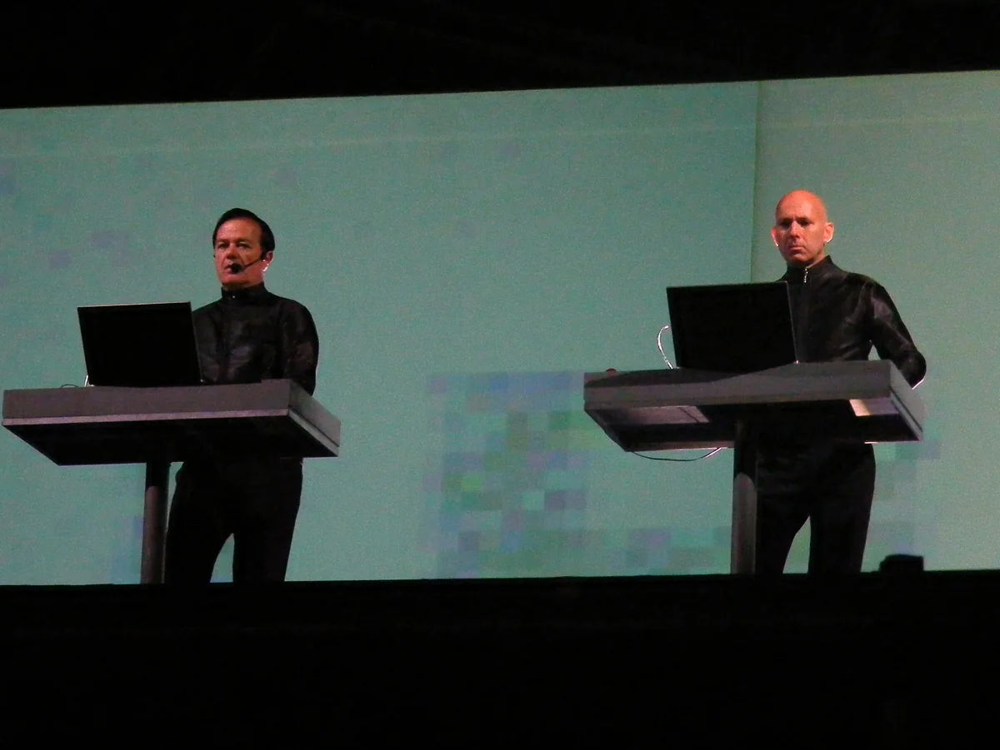
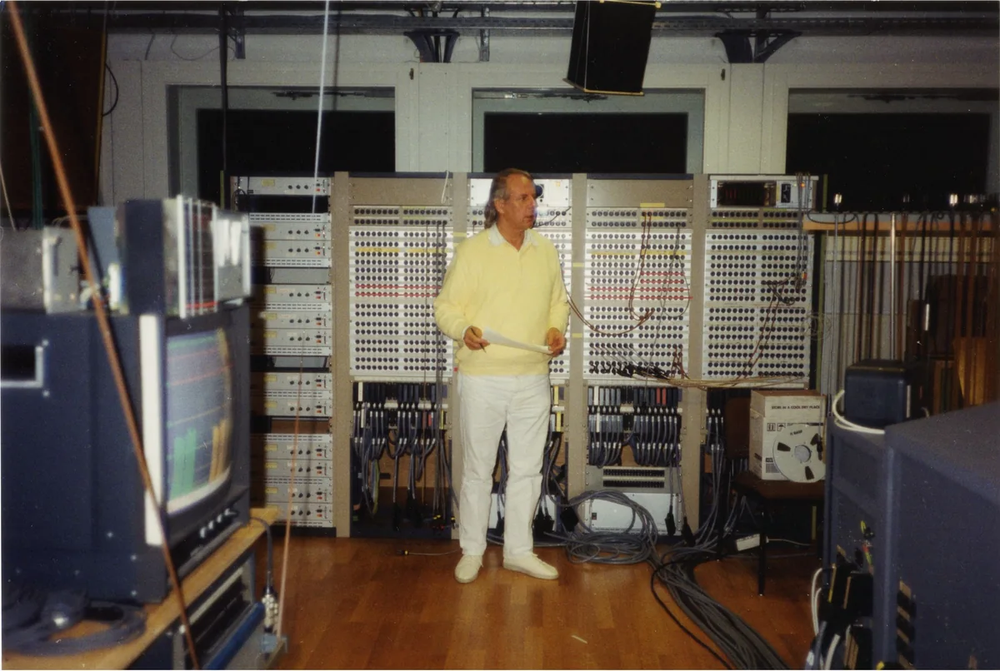
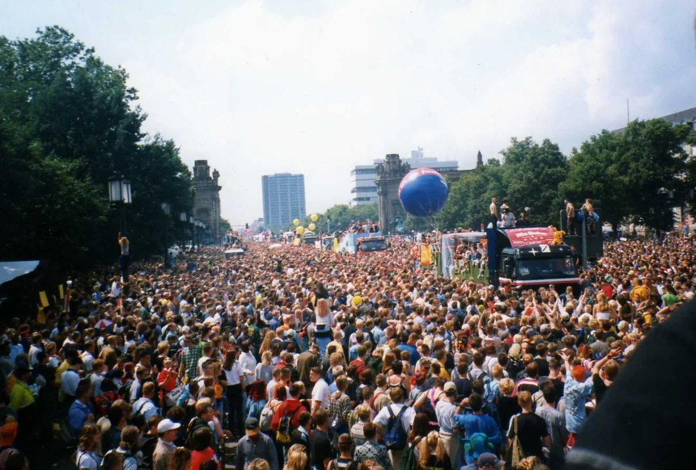

German electronic music history
The Evolution of German Electronic Music
From Cologne tape studios and Kraftwerk to Frankfurt trance, the Detroit-Berlin alliance, minimal techno and the tools that travelled worldwide.
Several histories, connected by machines and places.
German electronic music is not one national sound. It is a chain of local experiments: radio studios in Cologne, electronic pop in Düsseldorf, sequencer music in West Berlin, industrial performance, Frankfurt trance, post-Wall techno and the labels and software that later carried those ideas worldwide. The useful question is not what makes all German electronic music sound German. It is how different cities built tools, rooms and networks that let new sounds take hold.
Techno is central to that history, but Germany did not invent it. Detroit artists established techno in the 1980s. DJs, promoters, shops and labels in Frankfurt and Berlin then built distinct German scenes around Detroit techno, Chicago house, European industrial music and local club culture. That exchange matters more than a tidy national origin myth.

Why the cities matter.
The history becomes clearer when it is placed on a map. Cologne's post-war radio studio treated electronic sound as material for composition. Düsseldorf groups turned repetition, synthesis and a designed visual identity into pop. West Berlin developed long-form sequencer music in relative isolation. In the 1980s, Frankfurt built one of Germany's earliest continuous electronic dance networks. After the Wall fell, Berlin's empty buildings and new social freedom gave imported techno an unusual physical setting.
These routes overlapped, but they were not stages in one inevitable sequence. Karlheinz Stockhausen was not secretly making techno in the 1950s, and Tangerine Dream did not simply become a club act when sequencers became cheaper. The continuities are in methods and infrastructure: sustained work with machines, independent studios, record shops, specialist media, clubs and an audience willing to hear repetition as a main event.
- 1951Cologne
WDR electronic studio, Herbert Eimert and Karlheinz Stockhausen.
- 1970sDüsseldorf
Kraftwerk, NEU!, electronic pop and motorik repetition.
- 1970sWest Berlin
Tangerine Dream, Klaus Schulze and sequencer-led long-form music.
- 1980s to 1990sFrankfurt
Technoclub, Omen, techno and trance infrastructure.
- 1989 onwardBerlin
The Detroit alliance, Tresor and later minimal techno.
1951 onward
Cologne: electronic sound before electronic pop.
In 1951, Herbert Eimert began establishing the Studio for Electronic Music at the Nordwestdeutscher Rundfunk in Cologne. Karlheinz Stockhausen joined its circle in May 1953 and later became its artistic director. The studio used sine wave generators, filters, ring modulation and tape. Sounds could be produced, cut, ordered and combined without beginning with a conventional instrument or a live ensemble.
The distinction between elektronische Musik and the French practice of musique concrète mattered to its early practitioners. Cologne initially favoured electronically generated tones, while Pierre Schaeffer's Paris studio worked with recorded sounds. Stockhausen soon complicated that division in works such as Gesang der Jünglinge, which combined a recorded boy's voice with electronic material. The point was not a dance beat. It was control over the internal shape and placement of sound.

The WDR studio became an international centre for composers, yet electronic music remained a tiny part of the broadcaster's daily output. Its influence should not be measured as a direct line to a four-on-the-floor kick. It proved that a broadcast institution could maintain a purpose-built laboratory for electronic sound and that the studio itself could function as an instrument.
Cologne later produced a very different kind of infrastructure. The Delirium record shop opened on Gladbacher Straße in 1993 and became Kompakt, combining a shop, label, distributor, agency and publisher. Wolfgang Voigt's Gas project, Michael Mayer, The Modernist and the wider Kompakt network connected minimal techno and house to a city with a much older electronic history, without pretending the two periods were the same movement.
1970s
Düsseldorf and West Berlin: two different futures.
Kraftwerk formed in Düsseldorf in 1970 around Ralf Hütter and Florian Schneider. The first records still contained flute, organ, guitar and loose ensemble playing. On Autobahn in 1974, synthesis, electronic rhythm and a concise image of modern Germany moved to the foreground. The title track did not invent electronic pop alone, but it showed that a German-language idea, machine pulse and carefully controlled presentation could travel far outside the country's experimental circuit.
The Düsseldorf network was wider than one group. Michael Rother and Klaus Dinger left an early Kraftwerk line-up and formed NEU!, whose repetitive motorik drive became a different model of forward movement. Cluster and Harmonia explored softer, less rigid combinations of electronics, guitar and studio processing. Producer Conny Plank's studio linked artists who did not share a single genre but did share an interest in using recording technology as part of composition.
What made Kraftwerk especially consequential was the combination of sound and system. Kling Klang was studio, workshop and controlled public identity. The group's clipped melodies, electronic percussion and interest in transport, radioactivity and computers gave later synth-pop, electro and hip-hop artists clear material to reinterpret. Detroit's Juan Atkins has repeatedly named Kraftwerk as an influence, but influence is not authorship: Detroit techno joined those European signals to funk, Black radio and a specific industrial city.
West Berlin's electronic music moved differently. Tangerine Dream, Klaus Schulze and Manuel Göttsching developed extended pieces around synthesisers, sequencers and gradual harmonic change. The label “Berlin School” was applied to this approach, though the artists did not operate as a formal school. Tangerine Dream's Phaedra, recorded in late 1973 and released in 1974, made the unstable pulse of a Moog sequencer central to a long-form album side.
Göttsching's E2-E4, recorded in one take in 1981 and released in 1984, reduced the materials even further: a continuous electronic grid, small tonal changes and guitar. It later became important to DJs and producers outside the Berlin School context. The record is a useful bridge because it shows how music made without a club function could acquire one through later listening and sampling.
1980s
Bodies, machines and a divided country.
By the start of the 1980s, Düsseldorf's electronic language had become more physical and confrontational. Deutsch Amerikanische Freundschaft, usually shortened to DAF, stripped songs to Robert Görl's drumming, Gabi Delgado's voice and compact electronic sequences. With Conny Plank producing, records such as Alles ist gut in 1981 helped define a hard electronic body music that fed industrial dancefloors and became a reference point for later EBM. The Belgian group Front 242 helped establish EBM as a genre label.
DAF is also a warning against treating scenes as national containers. The group found important early attention in Britain and recorded key work in Plank's studio near Cologne. Einstürzende Neubauten in West Berlin followed a different route, using metal, tools, amplified objects and extreme performance to make industrial music literal. Der Plan, Liaisons Dangereuses and other post-punk electronic projects occupied further positions between art space, pop song and club track.
Electronic music in East Germany developed under different material and political conditions. A Red Bull Music Academy oral history estimates that only about a dozen electronic LPs appeared in the GDR between 1981 and 1989. Musicians including Reinhard Lakomy, Pond, Key and Servi described expensive or smuggled Western synthesisers, unreliable local equipment, church concerts and the state label Amiga. Tangerine Dream's 1980 concert at the Palast der Republik gave this music an unusually visible public moment.
There was no single underground GDR electronic scene equivalent to the later Berlin techno network. Some artists worked inside state institutions, some used churches or private production, and instrumental music could avoid the lyrical scrutiny applied to rock bands. That history belongs in the national picture precisely because it does not fit the familiar West German path from independent label to club.
1980s to early 1990s
Techno reaches Frankfurt and Berlin.
The techno that reached Germany in the late 1980s came from Detroit, while house and acid house came from Chicago. German DJs were already using “techno” more loosely for electronically produced dance records. In Frankfurt, Andreas Tomalla, known as Talla 2XLC, used the word as a record-shop category and started the Technoclub series in 1984. Dorian Gray at Frankfurt Airport, the Omen, Sven Väth, the magazines Frontpage and Groove, and later the Eye Q and Harthouse labels gave the Rhine-Main area a dense scene before Berlin became the international shorthand for German techno.
Frankfurt's records often moved towards trance: melodic sequences, long builds and a cleaner sense of lift. Väth and Ralf Hildenbeutel's “L'Esperanza” and Paul van Dyk's later Berlin record “For an Angel” show that German electronic dance music in the 1990s cannot be reduced to one hard industrial sound. Trance grew through clubs, labels, radio and mass events alongside techno rather than after it.
Berlin supplied a different set of conditions. Dr. Motte and Danielle de Picciotto organised the first Love Parade in July 1989, months before the Wall fell. Reunification then opened basements, power plants, bunkers and other temporarily available spaces. UFO had already created a centre for house and techno. Tresor opened on 13 March 1991 in the vaults of the former Wertheim department store and formed direct relationships with Detroit artists including Juan Atkins, Underground Resistance, Jeff Mills, Robert Hood and Drexciya.

The Berlin story is therefore not “Germany invents techno”. It is a story of translation and alliance. Detroit records met East and West Berlin dancers, cheap space, improvised venues, new labels and a generation living through a political rupture. Tresor Records made that relationship material by releasing music from both cities. In 2024, the German UNESCO Commission added Berlin techno culture to the national inventory of intangible cultural heritage, recognising the social practice around the music, not a German claim to its invention.
For the rooms, closures and door policies that sit outside this national history, see thecatrave's guide to the best clubs in Berlin.
1990s
Three routes through the 1990s.
The first route was direct and hard. Berlin labels such as Tresor and the record shop Hard Wax kept Detroit music close while German producers developed their own stripped, metallic and increasingly functional records. Basic Channel, the duo of Moritz von Oswald and Mark Ernestus, slowed that pressure down and flooded it with space, echo and surface noise. Their 1993 and 1994 records became the foundation of dub techno and influenced minimal music far beyond Berlin.
The second route was melodic and public. Frankfurt's trance infrastructure, MFS in Berlin, Paul van Dyk and mass gatherings such as Love Parade and Mayday made electronic dance music visible on a scale that the earlier experimental networks had never reached. Commercial success did not erase the underground, but it did produce arguments about speed, spectacle, sponsorship and who the music was for.
The third route spread through smaller labels and cities. Cologne's Kompakt connected minimal house and techno to a global distribution network. Munich's Disko B and International Deejay Gigolo later pushed acid, electro and electroclash. Hamburg artists and labels developed their own house, techno and experimental circuits. Leipzig's Distillery, opened in 1992, became a durable post-reunification institution outside Berlin. Germany's electronic culture was increasingly international, but its working parts remained local.
2000 onward
Clubs, software and scenes without one centre.
During the 2000s, Berlin became a destination for artists and dancers from across Europe and beyond. Ostgut closed in 2003 and its operators opened Berghain in 2004. Minimal techno became a dominant international club language, with Berlin labels and venues at its centre, while Kompakt's Cologne network and Frankfurt's Cocoon maintained different ideas of scale, melody and distribution. The result was not one German style. It was a dense national ecosystem that could support several incompatible ones.
One of Germany's largest later contributions was not a genre. Ableton was founded in Berlin in 1999 by people connected to the Monolake project and released the first version of Live in 2001. Its loop-based interface was built for composition and performance without stopping the music. The software became part of electronic production worldwide, a reminder that scenes also travel through tools.
Germany today still cannot be summarised by Berlin techno. Hamburg's Helena Hauff connects electro, acid, EBM and rough analogue recording. Cologne's Kompakt continues to sit between house, techno and ambient pop. Leipzig, Frankfurt, Munich and smaller cities support clubs, labels and radio platforms with their own histories. Berlin remains unusually visible, but visibility is not the same as national uniformity.
The practical way into this history is to follow records, then follow the networks around them: who released them, which shop distributed them, which room tested them and which city gave the collaborators time to meet. For a broader comparison, the evolution of UK electronic music shows how the same American sources changed under a different set of clubs, sound systems and radio stations. The live DJ set guide is a route into the music as it is played rather than filed by genre.
A quick guide to the main German electronic music scenes.
Cologne, Düsseldorf, Berlin and Frankfurt did not form a relay race. Each developed several overlapping traditions, and artists moved between them. This table is a listening map, not a claim that every record from a city shares one sound.
| City or region | Main period here | What changed | Start with |
|---|---|---|---|
| Cologne | 1951 onward | A purpose-built electronic studio; later a label and distribution network | Stockhausen, Wolfgang Voigt, Kompakt |
| Düsseldorf | 1970s and early 1980s | Electronic pop, motorik repetition, post-punk body music | Kraftwerk, NEU!, DAF |
| West Berlin | 1970s and early 1980s | Long-form sequencer music | Tangerine Dream, Klaus Schulze, Manuel Göttsching |
| Frankfurt / Rhine-Main | 1980s and 1990s | Early electronic club infrastructure and trance | Talla 2XLC, Sven Väth, Eye Q, Harthouse |
| Berlin | 1989 onward | Detroit alliance, post-Wall clubs, hard and minimal techno | Tresor, Basic Channel, Paul van Dyk, Monolake |
| East Germany | 1980s | Electronic music under scarce equipment and state-controlled recording | Reinhard Lakomy, Pond, Key, Servi |
German electronic music FAQ.
Did Germany invent techno?
No. Techno was established in Detroit in the 1980s by Black American artists including Juan Atkins, Derrick May and Kevin Saunderson. Kraftwerk was an important influence, but Detroit techno also came from funk, electro, Chicago house, local radio and the social conditions of Detroit. Frankfurt and Berlin built influential German scenes around that music.
Why is Berlin known for techno?
Berlin combined an existing house and techno network with the political and physical opening that followed the fall of the Wall. Temporary access to basements, bunkers and industrial buildings helped clubs such as Tresor grow, while direct connections with Detroit artists gave the scene musical depth. Long-running clubs, labels and international migration later made Berlin a global centre.
Is Kraftwerk techno?
No, not in the later genre sense. Kraftwerk made electronic pop before Detroit techno existed, and their rhythms, melodies and machine imagery influenced Juan Atkins and many other electronic musicians. Calling Kraftwerk techno erases the funk, electro, radio culture and Black artists who created the genre in Detroit.
What is the difference between Berlin School and Düsseldorf School?
Berlin School usually describes the long-form, sequencer-led electronic music associated with Tangerine Dream, Klaus Schulze and Manuel Göttsching in the 1970s. Düsseldorf School is a looser retrospective label for the electronic pop, motorik and post-punk network around Kraftwerk, NEU!, La Düsseldorf, DAF and related artists. Neither was a formal school, and their sounds overlap only partly.
Who are the key German electronic music artists?
A short historical route would include Karlheinz Stockhausen, Kraftwerk, Tangerine Dream, NEU!, Can, Manuel Göttsching, DAF, Einstürzende Neubauten, Sven Väth, Basic Channel, Paul van Dyk, Wolfgang Voigt and Monolake. It is a starting point across several eras, not a ranking and not a complete list.
Sources.
- WDR: Herbert Eimert and the Studio for Electronic Music
- Goethe-Institut: Düsseldorf and electronic music
- Tangerine Dream: Phaedra
- Higher Frequency: Manuel Göttsching interview
- Red Bull Music Academy: DAF interview
- Red Bull Music Academy: electronic music in East Germany
- Goethe-Institut: German techno from 1989 onward
- Federal Agency for Civic Education: techno and Love Parade
- Tresor: club and label history
- German UNESCO Commission: Berlin techno culture
- Kompakt: 20-year anniversary history
- Ableton: early company history
- taz: interview on the founding of Distillery Leipzig
Continue reading
Read next.
 A03Timeline / UK music / ~27 min
A03Timeline / UK music / ~27 minThe Evolution of UK Electronic Music
Ten sounds that travelled from regional underground scenes into global culture.
Read article → A12Guide / Berlin clubs / ~10 min
A12Guide / Berlin clubs / ~10 minBest Clubs in Berlin: The Legends and the Ones Still Open
The rooms that made Berlin a techno city, the famous clubs that closed, and the best clubs in Berlin that are still open.
Read article → A11Guide / Burning Man / ~13 min
A11Guide / Burning Man / ~13 minWhat Is Burning Man? The Event, the City and the Music
A participant-built city in the Nevada desert, with no central lineup or main stage, and the sound camps and art cars that programme their own music.
Read article → A13Guide / London clubs / ~12 min
A13Guide / London clubs / ~12 minClubs in London: The Legends and the Best Ones Open Now
The London clubs that made acid house, jungle, garage and dubstep, from Heaven to the Blue Note, and the best clubs in London open now.
Read article →